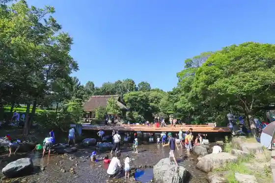
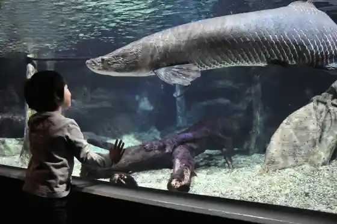
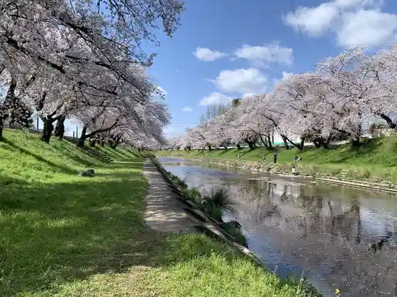
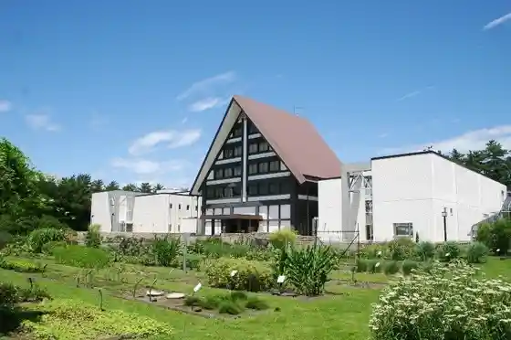

Kasen Kankyo Rakuen
Kakamigahara, Gifu · 0586-89-6766 · Official / source link

Gifu Kakamigahara Kokuuchu Museum
Kakamigahara, Gifu · 058-386-8500 · Official / source link
Sekai Tansuigyo Sono Aquarium Akua Toto Gifu
Kakamigahara, Gifu · 0586-89-8200 · Official / source link

Shin Sakaigawa Tsutsumi Hyaku Juro Sakura
Kakamigahara, Gifu · 058-383-9925 · Official / source link

Naito Kinen Kusuri Museum
Kakamigahara, Gifu · 0586-89-2101 · Official / source link

Manabi no Mori Puromunado
Kakamigahara, Gifu · 058-383-9925 · Official / source link
Sohara Nature Park
Kakamigahara, Gifu · 058-383-9925 · Official / source link
Kawa Ato Mizumi Park
Kakamigahara, Gifu · 058-383-1533 · Official / source link
Nakasendo Unuma Yado
Kakamigahara, Gifu · 058-379-5055 · Official / source link
Mura Kuni Za
Kakamigahara, Gifu · 058-383-1475 · Official / source link
Kyu Kawakami Iebetsu Tei Bansho Sono
Kakamigahara, Gifu · 058-384-0700 · Official / source link
Ro Hatake Iseki
Kakamigahara, Gifu · 058-383-1123 · Official / source link
Nippon Line Unuma Forest
Kakamigahara, Gifu · 058-383-1129 · Official / source link
Kiso Kawa Ukai
Kakamigahara, Gifu · 0568-61-2727 · Official / source link
Chogase Ike
Kakamigahara, Gifu · 058-383-9925 · Official / source link
Tajikarao Shrine
Kakamigahara, Gifu · 058-382-3383 · Official / source link
Teisho Tera
Kakamigahara, Gifu · 058-384-0202 · Official / source link
Kagami no Shizen Isan Forest
Kakamigahara, Gifu · 058-383-1531 · Official / source link
Ken'ei Kakamigahara Park
Kakamigahara, Gifu · 058-370-0202 · Official / source link
Honke Mame Daifuku Daruma Do
Kakamigahara, Gifu · 0120-28-0523 · Official / source link
BBQCANVAS (Babekyukyambasu)
Kakamigahara, Gifu · 0586-89-8929 · Official / source link
Kawata Kiso Kawatabi Kawa no Tatakai Ato Kiso Kawa Bunka Museum
Kakamigahara, Gifu · Official / source link
Inaba Ichigo Farm
Kakamigahara, Gifu · 058-381-9282 · Official / source link
Jokyu no Ran Kassen Kuyo to (Hotoke Gan In Maewatashi Fudo Mikoto)
Kakamigahara, Gifu · Official / source link
Nichi no Shutsu Fudo Mikoto
Kakamigahara, Gifu · 058-384-7651 · Official / source link
Hofuku Tera
Kakamigahara, Gifu · 058-384-3510 · Official / source link
Kasa Bi Shrine
Kakamigahara, Gifu · 058-383-8962 · Official / source link
Zuigan Tera
Kakamigahara, Gifu · 0583-83-3715 · Official / source link
Iki Yamashiro
Kakamigahara, Gifu · Official / source link
Shin Kano Camp Office
Kakamigahara, Gifu · 058-383-1531 · Official / source link
KAKAMIGAHARA PARK BRIDGE
Kakamigahara, Gifu · Official / source link